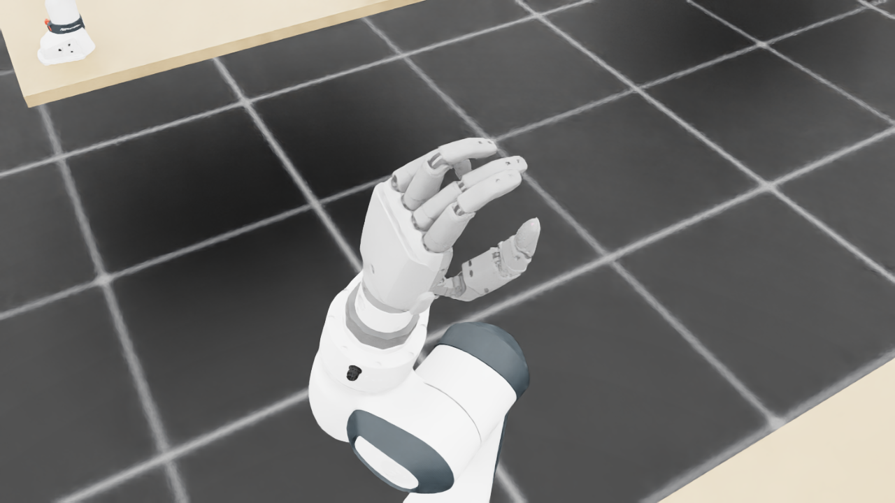
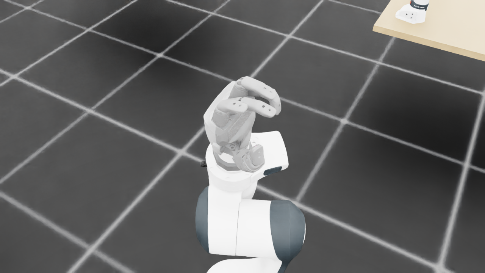
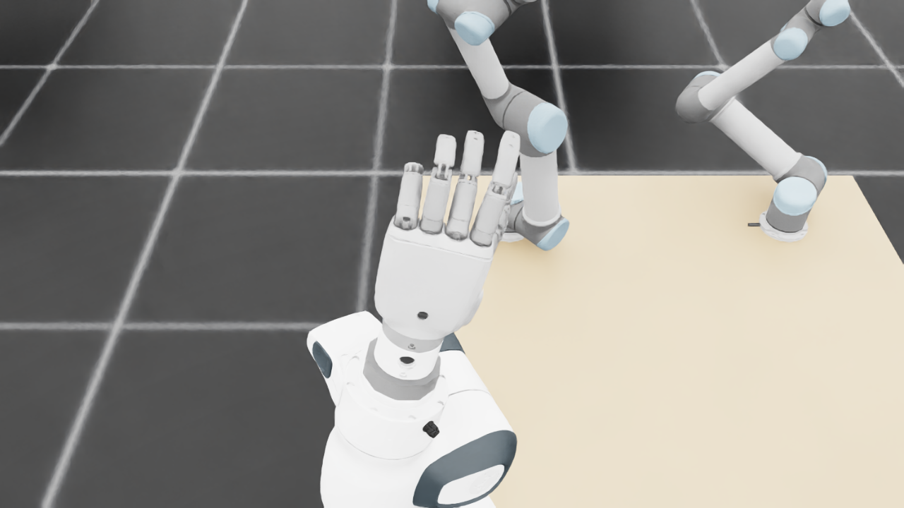
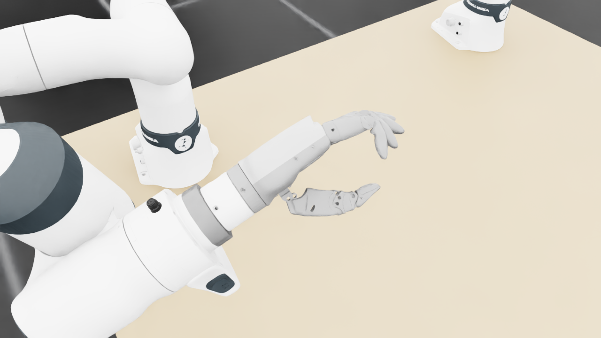
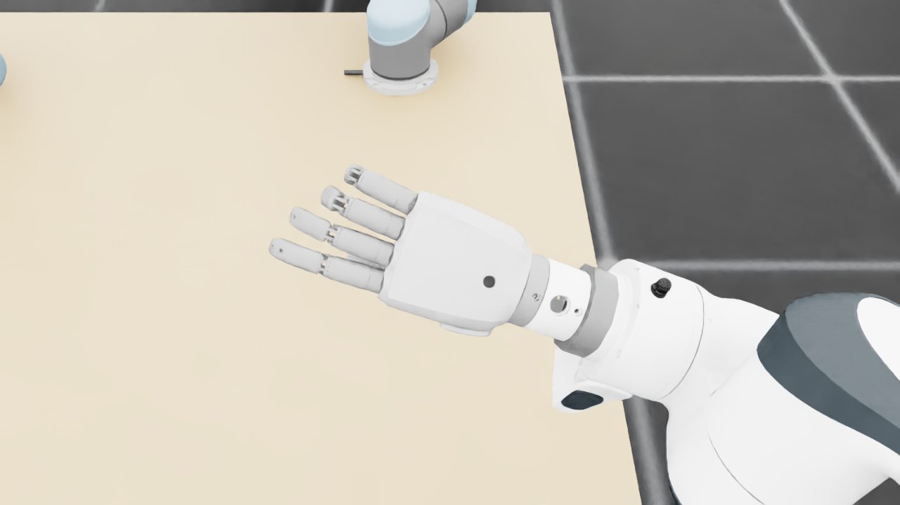
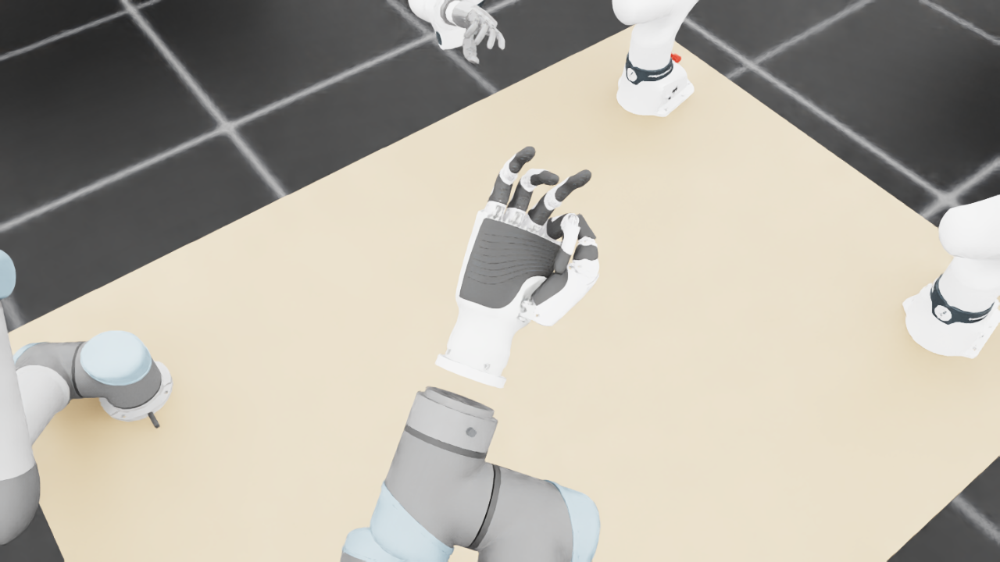
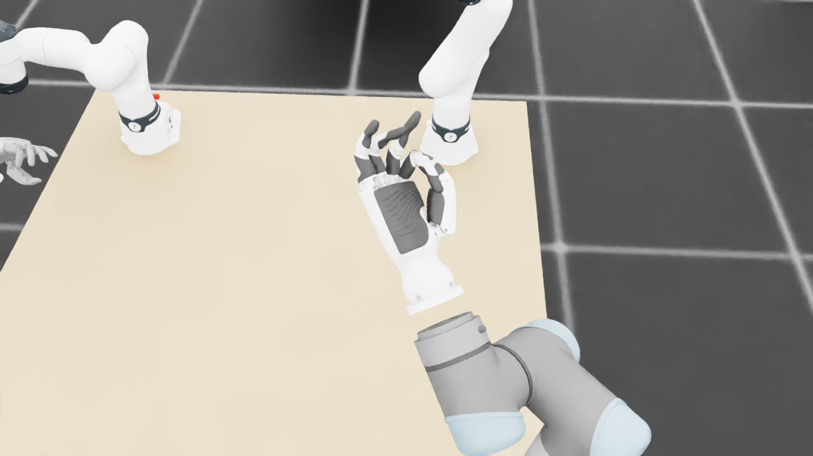
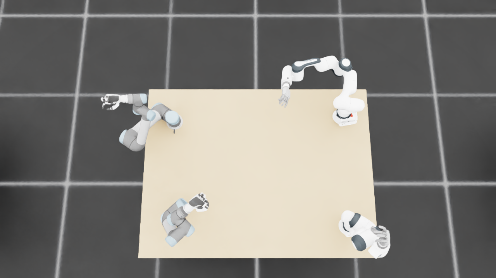
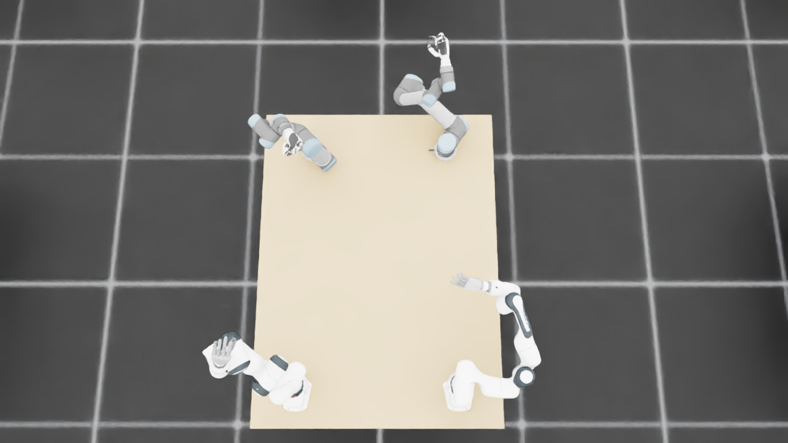
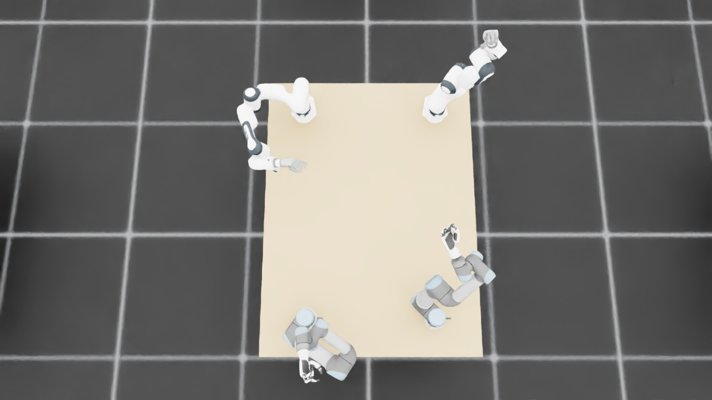

规定初始像素覆盖已通过独立数据验收，完整12步与物理安全未通过。Prescribed initial pixel coverage passes the independent DATA audit; full12-step and physical acceptance remain incomplete. Original1280×720; no edits/crop. Every image below is INITIAL, not micro1/final.
{"seed": 2, "proposal_id": 2107, "global_id": 24635, "family": 3}









{
"qualified": true,
"arms": {
"F_L": {
"qualified": true,
"palm_visual_peak_pixels": 23000,
"finger_family_peak_pixels": {
"thumb": 7598,
"index": 5755,
"middle": 4380,
"ring": 5150,
"little": 2581
},
"per_native_body_peak_pixels": {
"/World/envs/env_22/F_L/f2_hand/left_hand_base": 26469,
"/World/envs/env_22/F_L/f2_hand/left_index_1": 2632,
"/World/envs/env_22/F_L/f2_hand/left_middle_1": 2595,
"/World/envs/env_22/F_L/f2_hand/left_pinky_1": 2233,
"/World/envs/env_22/F_L/f2_hand/left_ring_1": 2653,
"/World/envs/env_22/F_L/f2_hand/left_thumb_1": 682,
"/World/envs/env_22/F_L/f2_hand/left_index_2": 3123,
"/World/envs/env_22/F_L/f2_hand/left_middle_2": 2755,
"/World/envs/env_22/F_L/f2_hand/left_pinky_2": 1055,
"/World/envs/env_22/F_L/f2_hand/left_ring_2": 3171,
"/World/envs/env_22/F_L/f2_hand/left_thumb_2": 3720,
"/World/envs/env_22/F_L/f2_hand/left_thumb_3": 1742,
"/World/envs/env_22/F_L/f2_hand/left_thumb_4": 1752
},
"native_body_visibility_gaps": [],
"all_native_hand_bodies_observed": true,
"full_mesh_coverage_certified": false,
"all_recorded_attempt_peak": {
"qualified": false,
"palm_visual_peak_pixels": 27578,
"finger_family_peak_pixels": {
"thumb": 8366,
"index": 5755,
"middle": 4380,
"ring": 5150,
"little": 4953
},
"per_native_body_peak_pixels": {
"/World/envs/env_22/F_L/f2_hand/left_hand_base": 33311,
"/World/envs/env_22/F_L/f2_hand/left_index_1": 2831,
"/World/envs/env_22/F_L/f2_hand/left_middle_1": 2595,
"/World/envs/env_22/F_L/f2_hand/left_pinky_1": 2990,
"/World/envs/env_22/F_L/f2_hand/left_ring_1": 2653,
"/World/envs/env_22/F_L/f2_hand/left_thumb_1": 693,
"/World/envs/env_22/F_L/f2_hand/left_index_2": 3123,
"/World/envs/env_22/F_L/f2_hand/left_middle_2": 2755,
"/World/envs/env_22/F_L/f2_hand/left_pinky_2": 1984,
"/World/envs/env_22/F_L/f2_hand/left_ring_2": 3171,
"/World/envs/env_22/F_L/f2_hand/left_thumb_2": 4541,
"/World/envs/env_22/F_L/f2_hand/left_thumb_3": 1855,
"/World/envs/env_22/F_L/f2_hand/left_thumb_4": 1831
},
"native_body_visibility_gaps": [],
"all_native_hand_bodies_observed": true,
"full_mesh_coverage_certified": false,
"qualification": false
},
"attempts": 10,
"decoded": 10
},
"F_R": {
"qualified": true,
"palm_visual_peak_pixels": 34025,
"finger_family_peak_pixels": {
"thumb": 11375,
"index": 6359,
"middle": 5009,
"ring": 4121,
"little": 6271
},
"per_native_body_peak_pixels": {
"/World/envs/env_22/F_R/f2_hand/right_hand_base": 40585,
"/World/envs/env_22/F_R/f2_hand/right_index_1": 3879,
"/World/envs/env_22/F_R/f2_hand/right_middle_1": 3076,
"/World/envs/env_22/F_R/f2_hand/right_pinky_1": 3977,
"/World/envs/env_22/F_R/f2_hand/right_ring_1": 3084,
"/World/envs/env_22/F_R/f2_hand/right_thumb_1": 1130,
"/World/envs/env_22/F_R/f2_hand/right_index_2": 2480,
"/World/envs/env_22/F_R/f2_hand/right_middle_2": 1933,
"/World/envs/env_22/F_R/f2_hand/right_pinky_2": 2294,
"/World/envs/env_22/F_R/f2_hand/right_ring_2": 1560,
"/World/envs/env_22/F_R/f2_hand/right_thumb_2": 6098,
"/World/envs/env_22/F_R/f2_hand/right_thumb_3": 2180,
"/World/envs/env_22/F_R/f2_hand/right_thumb_4": 1967
},
"native_body_visibility_gaps": [],
"all_native_hand_bodies_observed": true,
"full_mesh_coverage_certified": false,
"all_recorded_attempt_peak": {
"qualified": false,
"palm_visual_peak_pixels": 35940,
"finger_family_peak_pixels": {
"thumb": 11375,
"index": 6359,
"middle": 5009,
"ring": 4121,
"little": 6271
},
"per_native_body_peak_pixels": {
"/World/envs/env_22/F_R/f2_hand/right_hand_base": 43754,
"/World/envs/env_22/F_R/f2_hand/right_index_1": 3879,
"/World/envs/env_22/F_R/f2_hand/right_middle_1": 3076,
"/World/envs/env_22/F_R/f2_hand/right_pinky_1": 3977,
"/World/envs/env_22/F_R/f2_hand/right_ring_1": 3084,
"/World/envs/env_22/F_R/f2_hand/right_thumb_1": 1130,
"/World/envs/env_22/F_R/f2_hand/right_index_2": 2480,
"/World/envs/env_22/F_R/f2_hand/right_middle_2": 1933,
"/World/envs/env_22/F_R/f2_hand/right_pinky_2": 2294,
"/World/envs/env_22/F_R/f2_hand/right_ring_2": 1560,
"/World/envs/env_22/F_R/f2_hand/right_thumb_2": 6098,
"/World/envs/env_22/F_R/f2_hand/right_thumb_3": 2180,
"/World/envs/env_22/F_R/f2_hand/right_thumb_4": 2484
},
"native_body_visibility_gaps": [],
"all_native_hand_bodies_observed": true,
"full_mesh_coverage_certified": false,
"qualification": false
},
"attempts": 7,
"decoded": 7
},
"U_L": {
"qualified": true,
"palm_visual_peak_pixels": 2633,
"finger_family_peak_pixels": {
"thumb": 7600,
"index": 3312,
"middle": 2375,
"ring": 2753,
"little": 1250
},
"per_native_body_peak_pixels": {
"/World/envs/env_22/U_L/wrist_3_link": 38542,
"/World/envs/env_22/U_L/left_index_1": 2133,
"/World/envs/env_22/U_L/left_little_1": 486,
"/World/envs/env_22/U_L/left_middle_1": 888,
"/World/envs/env_22/U_L/left_ring_1": 1725,
"/World/envs/env_22/U_L/left_thumb_1": 430,
"/World/envs/env_22/U_L/left_index_2": 1401,
"/World/envs/env_22/U_L/left_little_2": 953,
"/World/envs/env_22/U_L/left_middle_2": 1487,
"/World/envs/env_22/U_L/left_ring_2": 1028,
"/World/envs/env_22/U_L/left_thumb_2": 4359,
"/World/envs/env_22/U_L/left_thumb_3": 1937,
"/World/envs/env_22/U_L/left_thumb_4": 898
},
"native_body_visibility_gaps": [],
"all_native_hand_bodies_observed": true,
"full_mesh_coverage_certified": false,
"all_recorded_attempt_peak": {
"qualified": true,
"palm_visual_peak_pixels": 2633,
"finger_family_peak_pixels": {
"thumb": 7600,
"index": 3312,
"middle": 2375,
"ring": 2753,
"little": 1250
},
"per_native_body_peak_pixels": {
"/World/envs/env_22/U_L/wrist_3_link": 38542,
"/World/envs/env_22/U_L/left_index_1": 2133,
"/World/envs/env_22/U_L/left_little_1": 486,
"/World/envs/env_22/U_L/left_middle_1": 888,
"/World/envs/env_22/U_L/left_ring_1": 1725,
"/World/envs/env_22/U_L/left_thumb_1": 430,
"/World/envs/env_22/U_L/left_index_2": 1401,
"/World/envs/env_22/U_L/left_little_2": 953,
"/World/envs/env_22/U_L/left_middle_2": 1487,
"/World/envs/env_22/U_L/left_ring_2": 1028,
"/World/envs/env_22/U_L/left_thumb_2": 4359,
"/World/envs/env_22/U_L/left_thumb_3": 1937,
"/World/envs/env_22/U_L/left_thumb_4": 898
},
"native_body_visibility_gaps": [],
"all_native_hand_bodies_observed": true,
"full_mesh_coverage_certified": false,
"qualification": false
},
"attempts": 3,
"decoded": 3
},
"U_R": {
"qualified": true,
"palm_visual_peak_pixels": 9377,
"finger_family_peak_pixels": {
"thumb": 5751,
"index": 2147,
"middle": 2199,
"ring": 1954,
"little": 2594
},
"per_native_body_peak_pixels": {
"/World/envs/env_22/U_R/wrist_3_link": 29300,
"/World/envs/env_22/U_R/right_index_1": 931,
"/World/envs/env_22/U_R/right_little_1": 1597,
"/World/envs/env_22/U_R/right_middle_1": 1096,
"/World/envs/env_22/U_R/right_ring_1": 1253,
"/World/envs/env_22/U_R/right_thumb_1": 301,
"/World/envs/env_22/U_R/right_index_2": 1282,
"/World/envs/env_22/U_R/right_little_2": 997,
"/World/envs/env_22/U_R/right_middle_2": 1103,
"/World/envs/env_22/U_R/right_ring_2": 1055,
"/World/envs/env_22/U_R/right_thumb_2": 3466,
"/World/envs/env_22/U_R/right_thumb_3": 1519,
"/World/envs/env_22/U_R/right_thumb_4": 668
},
"native_body_visibility_gaps": [],
"all_native_hand_bodies_observed": true,
"full_mesh_coverage_certified": false,
"all_recorded_attempt_peak": {
"qualified": false,
"palm_visual_peak_pixels": 10603,
"finger_family_peak_pixels": {
"thumb": 7803,
"index": 2147,
"middle": 2199,
"ring": 1954,
"little": 2594
},
"per_native_body_peak_pixels": {
"/World/envs/env_22/U_R/wrist_3_link": 30686,
"/World/envs/env_22/U_R/right_index_1": 931,
"/World/envs/env_22/U_R/right_little_1": 1597,
"/World/envs/env_22/U_R/right_middle_1": 1096,
"/World/envs/env_22/U_R/right_ring_1": 1253,
"/World/envs/env_22/U_R/right_thumb_1": 301,
"/World/envs/env_22/U_R/right_index_2": 1486,
"/World/envs/env_22/U_R/right_little_2": 997,
"/World/envs/env_22/U_R/right_middle_2": 1119,
"/World/envs/env_22/U_R/right_ring_2": 1055,
"/World/envs/env_22/U_R/right_thumb_2": 4750,
"/World/envs/env_22/U_R/right_thumb_3": 2031,
"/World/envs/env_22/U_R/right_thumb_4": 785
},
"native_body_visibility_gaps": [],
"all_native_hand_bodies_observed": true,
"full_mesh_coverage_certified": false,
"qualification": false
},
"attempts": 4,
"decoded": 4
}
},
"wide": {
"qualified": true,
"per_native_object_peak_pixels": {
"/World/envs/env_22/F_L/fr3_link0": 1334,
"/World/envs/env_22/F_L/fr3_link1": 1097,
"/World/envs/env_22/F_L/fr3_link2": 1247,
"/World/envs/env_22/F_L/fr3_link3": 1726,
"/World/envs/env_22/F_L/fr3_link4": 1318,
"/World/envs/env_22/F_L/fr3_link5": 2521,
"/World/envs/env_22/F_L/fr3_link6": 1152,
"/World/envs/env_22/F_L/fr3_link7": 1248,
"/World/envs/env_22/F_L/fr3_link8": 157,
"/World/envs/env_22/F_L/f2_hand/left_hand_base": 578,
"/World/envs/env_22/F_L/f2_hand/left_index_1": 75,
"/World/envs/env_22/F_L/f2_hand/left_middle_1": 90,
"/World/envs/env_22/F_L/f2_hand/left_pinky_1": 158,
"/World/envs/env_22/F_L/f2_hand/left_ring_1": 72,
"/World/envs/env_22/F_L/f2_hand/left_thumb_1": 18,
"/World/envs/env_22/F_L/f2_hand/left_index_2": 125,
"/World/envs/env_22/F_L/f2_hand/left_middle_2": 151,
"/World/envs/env_22/F_L/f2_hand/left_pinky_2": 88,
"/World/envs/env_22/F_L/f2_hand/left_ring_2": 159,
"/World/envs/env_22/F_L/f2_hand/left_thumb_2": 75,
"/World/envs/env_22/F_L/f2_hand/left_thumb_3": 74,
"/World/envs/env_22/F_L/f2_hand/left_thumb_4": 68,
"/World/envs/env_22/F_R/fr3_link0": 1671,
"/World/envs/env_22/F_R/fr3_link1": 1773,
"/World/envs/env_22/F_R/fr3_link2": 2779,
"/World/envs/env_22/F_R/fr3_link3": 2113,
"/World/envs/env_22/F_R/fr3_link4": 1180,
"/World/envs/env_22/F_R/fr3_link5": 2814,
"/World/envs/env_22/F_R/fr3_link6": 945,
"/World/envs/env_22/F_R/fr3_link7": 528,
"/World/envs/env_22/F_R/fr3_link8": 121,
"/World/envs/env_22/F_R/f2_hand/right_hand_base": 669,
"/World/envs/env_22/F_R/f2_hand/right_index_1": 56,
"/World/envs/env_22/F_R/f2_hand/right_middle_1": 53,
"/World/envs/env_22/F_R/f2_hand/right_pinky_1": 73,
"/World/envs/env_22/F_R/f2_hand/right_ring_1": 59,
"/World/envs/env_22/F_R/f2_hand/right_thumb_1": 0,
"/World/envs/env_22/F_R/f2_hand/right_index_2": 62,
"/World/envs/env_22/F_R/f2_hand/right_middle_2": 71,
"/World/envs/env_22/F_R/f2_hand/right_pinky_2": 48,
"/World/envs/env_22/F_R/f2_hand/right_ring_2": 66,
"/World/envs/env_22/F_R/f2_hand/right_thumb_2": 94,
"/World/envs/env_22/F_R/f2_hand/right_thumb_3": 32,
"/World/envs/env_22/F_R/f2_hand/right_thumb_4": 24,
"/World/envs/env_22/U_L/base_link": 408,
"/World/envs/env_22/U_L/shoulder_link": 1499,
"/World/envs/env_22/U_L/upper_arm_link": 3381,
"/World/envs/env_22/U_L/forearm_link": 3475,
"/World/envs/env_22/U_L/wrist_1_link": 486,
"/World/envs/env_22/U_L/wrist_2_link": 1077,
"/World/envs/env_22/U_L/wrist_3_link": 1392,
"/World/envs/env_22/U_L/left_index_1": 22,
"/World/envs/env_22/U_L/left_little_1": 79,
"/World/envs/env_22/U_L/left_middle_1": 38,
"/World/envs/env_22/U_L/left_ring_1": 44,
"/World/envs/env_22/U_L/left_thumb_1": 5,
"/World/envs/env_22/U_L/left_index_2": 57,
"/World/envs/env_22/U_L/left_little_2": 60,
"/World/envs/env_22/U_L/left_middle_2": 83,
"/World/envs/env_22/U_L/left_ring_2": 66,
"/World/envs/env_22/U_L/left_thumb_2": 178,
"/World/envs/env_22/U_L/left_thumb_3": 84,
"/World/envs/env_22/U_L/left_thumb_4": 45,
"/World/envs/env_22/U_R/base_link": 228,
"/World/envs/env_22/U_R/shoulder_link": 1082,
"/World/envs/env_22/U_R/upper_arm_link": 2699,
"/World/envs/env_22/U_R/forearm_link": 2774,
"/World/envs/env_22/U_R/wrist_1_link": 1360,
"/World/envs/env_22/U_R/wrist_2_link": 1110,
"/World/envs/env_22/U_R/wrist_3_link": 1975,
"/World/envs/env_22/U_R/right_index_1": 43,
"/World/envs/env_22/U_R/right_little_1": 74,
"/World/envs/env_22/U_R/right_middle_1": 31,
"/World/envs/env_22/U_R/right_ring_1": 59,
"/World/envs/env_22/U_R/right_thumb_1": 23,
"/World/envs/env_22/U_R/right_index_2": 93,
"/World/envs/env_22/U_R/right_little_2": 45,
"/World/envs/env_22/U_R/right_middle_2": 63,
"/World/envs/env_22/U_R/right_ring_2": 79,
"/World/envs/env_22/U_R/right_thumb_2": 211,
"/World/envs/env_22/U_R/right_thumb_3": 115,
"/World/envs/env_22/U_R/right_thumb_4": 53,
"/World/envs/env_22/TableF": 114857,
"/World/envs/env_22/TableU": 115960
},
"arm_peak_pixels": {
"F_L": 10978,
"F_R": 15089,
"U_L": 12462,
"U_R": 10150
},
"table_peak_pixels": {
"TableF": 114857,
"TableU": 115960
},
"critical_body_peak_pixels": {
"/World/envs/env_22/U_L/forearm_link": 3475,
"/World/envs/env_22/U_L/wrist_2_link": 1077,
"/World/envs/env_22/U_R/forearm_link": 2774,
"/World/envs/env_22/U_R/wrist_2_link": 1110
}
},
"raw_attempt_count": 38,
"PNG_count": 38,
"angle_records": 38,
"max_actual_angle_identity_error_deg": 5.684341886080802e-14,
"held_snapshot_checks": 2110,
"universal_visibility_impossible": false,
"full_mesh_coverage_certified": false
}